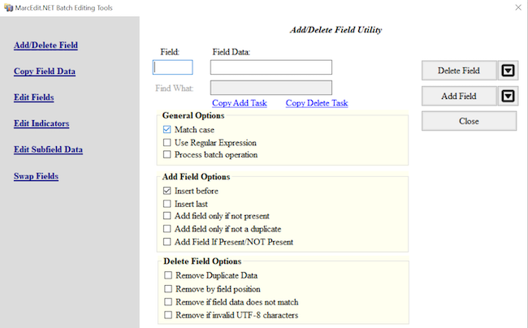

Content from Introduction to MarcEdit
Last updated on 2023-04-25 | Edit this page
Estimated time 10 minutes
Overview
Questions
- What is MarcEdit?
- What can MarcEdit do?
Objectives
- Explain what the MarcEdit software does
- Explain how the MarcEdit software can help work with library bibliographic data and library MARC files
What is MarcEdit?
MarcEdit is a suite of tools created and maintained by Terry Reese. The tools together form the MarcEdit software. These tools provide numerous functions which can be used to create, edit, and manipulate library metadata, particularly, though not limited to, records in a variety of MARC formats and standards. In this way, the MarcEdit software is MARC agnostic and can work with Unimarc or MARC21. MarcEdit can be used to:
- make small, single, edits to individual MARC records
- make edits across many MARC records at a single time
- automate common edits/processes
- validate your data against defined MARC rules
- convert data between different formats
- enhance your data
- pull data from external sources
The features offered by the suite of MarcEdit tools continue to evolve, with new features added as the software is updated by Terry Reese. A comprehensive list of features is available on the MarcEdit website.
Although the ability to create, view and edit MARC records is built into many pieces of library and bibliographic management software, MarcEdit is particularly flexible and powerful for manipulating MARC data in bulk. With MarcEdit’s wide-ranging functionality and integration into other library software and services, it is a very powerful toolkit for anyone working with bibliographic data.
MarcEdit’s Primary Features
Profiling MARC Data
Before working with any data file, it is advantageous to understand that data. MarcEdit can help you answer common questions you might have of your data, such as: How many records are in the file? Does the file contain MARC data that describes only books, and are those books print and/or electronic? Do the records follow national metadata standards and best practices needed for your local systems?
Getting a profile of the MARC data in your file can help you make a plan on what changes need to be made to the file. Further, it can help you automate some of the changes if this type of file is one that you work with often.
Manipulating MARC Data
MarcEdit is like the Swiss army knife for MARC data. You can perform single (one record) or global (all records) edits such as adding or deleting MARC fields, subfields and indicator values. Other edit functions include building fields using MARC data from other fields, or changing the case of data in a field. You can also run functions that update your MARC data to the content standard Resource Description and Access (RDA) or assign OCLC’s FAST subject headings to records in the file.
Tasks and Automation
If you have a list of changes to make, MarcEdit allows you to package these together to be run one after another in Tasks. These packages of changes can then be saved for future use. This is one of the ways to automate your work, making manipulating your MARC data easier and quicker.
Integrations
MarcEdit can integrate with OCLC’s WorldCat and Ex Libris’ Alma library system platform. Thanks to these integrations, you can retrieve records from external services, manipulate the records, and then push the changes back to the system integration of your choice.
Using MarcEdit you can harvest OAI or Open Archives Initiative for Harvesting Metadata Protocol Dublin Core or MARC21 records. Though not necessarily an integration, harvested records can also be manipulated.
Getting help
If you encounter problems installing MarcEdit or using a MarcEdit feature, a good source of support is the MarcEdit mailing list. The MarcEdit website has a list of places where you can get help using the software including:
Content from Working with MARC files
Last updated on 2023-08-18 | Edit this page
Estimated time 21 minutes
Overview
Questions
- What is a MARC binary file?
- What does it mean to break and make a MARC file and how do I open a file of MARC records in MARCedit?
- Why is encoding important?
- How does the MarcEditor display MARC records?
Objectives
- Explain the difference between mrc and mrk MARC file formats
- Successfully break and open a file of MARC records
- Explain encoding and its importance
- Understand how to read a MARC record in the MarcEditor
Working with MARC files
MarcEdit recognizes the following MARC file types:
| File type | File extension | Usage |
| Binary MARC file | mrc | File format typically used in an ILS or LSP. Other file extensions provided by vendors (ex. marc, dat, bin) are equivalent. Binary is format consisting of a series of sequential bytes, each of which is eight bits in length. |
| Mnemonic MARC Text File | mrk | File format used by MarcEdit that is a human readable version of the binary file. |
| MARC UTF-8 Text File | mrk8 | Legacy file format for MARC mnemonic files saved with UTF8 encoding. |
| MARCXML file | xml | A MARC file expressed in the eXtensible Markup format or a text-based format for representing structured information. |
To work with a MARC file in the MARCEditor your file needs to be in MARC mnemonic format. If you only have a binary file, then that file needs to be converted to the mnemonic format.
MARC Tools
To work with MARC data files or convert between metadata formats for library bibliographic data recognized by MarcEdit, click on the MARC Tools icon that has the crossed hammer and spanner in the upper left hand corner of the main menu. The available features are:
- MarcBreaker: This “breaks” the MARC binary file into a readable (mnemonic) format that can be edited in the MarcEditor.
- MarcMaker: This takes the readable (mnemonic) format MARC data file and creates the MARC binary file.
- MARC21 to MARC21XML: This converts a MARC21 file to MARC21XML.
- MARC21XML to MARC21: This converts a MARC21XML file to a MARC21 binary file.
- MARC to JSON: This converts a MARC21 file to a JSON file.
- JSON to MARC: This converts a JSON file to a MARC21 file.
- JSON to XML: This converts a JSON file to XML.
- XML to JSON: This converts an XML file to JSON.
The conversions from one encoding standard to another, as in MARC21 to MARC21XML, rely on eXtensible stylesheets. MarcEdit comes with several default stylesheets which come from those maintained by the Library of Congress. If you are familiar with stylesheets, you can also create your own.
Character Encoding
To ensure the integrity of your data you need to select the correct character encoding for your dataset. MarcEdit does not automatically detect character encoding, however, UTF8 is set as the default encoding scheme. You can update the encoding scheme when using the MarcBreaker, or you can update the default in Preferences → MarEditor → Default Encoding. For more information on character encoding and translating from one encoding to another, see The MarcEdit Field Guide
Break a MARC Binary File
To transform our binary MARC file (.mrc) into MARC mnemonic human readable format (.mrk), you use the MarcBreaker.
Break a MARC (.mrc) file to use in the MarcEditor
- Launch MarcEdit and from the main window click on the MARC Tools Icon.
- In the MARC Tools window, Select Operation → MARCBreaker.
- In the field, Select Data to Process, click the file folder image to the right of the Open box to browse for the sample MARC data file (.mrc). Double click the found file to select it.
- Next, you will need save your file in the MARC mnemonic format by clicking the file folder to the right of the Save As box. Select the location and name you would like to give you new file.
- Under Character encoding select UTF8 as default character encoding.
- Click execute.
- Once you click execute the newly created .mrk file will available to open in the MarcEditor. Under Results at the bottom of the window you will see a count of the records in your file. Click Edit Records to open the .mrk file in the MarcEditor.
You should now see the MARC records from the file displaying in the MarcEditor
The MarcEditor displays the records in what is called the ‘Mnemonic MARC Text File’ format (file extension *.mrk). Each line in the file represents a field in a MARC record:
=245 14$aThe Lord of the Rings /$c J.R.R. Tolkien.This example breaks down as follows:
=
|
Each line/field starts with the ‘=’ sign. |
245
|
The ‘=’ is followed immediately by the three character MARC field code. |
[two spaces]
|
The MARC field is always followed by two spaces. |
14
|
The field indicators follow the spaces if the field has indicators. When
an indicator is not coded a \ is used. For the control or
fixed fields where no indicators are used, the field content starts
directly after the spaces.
|
$aThe Lord of the Rings /$c J.R.R. Tolkien.
|
The field content contains the subfields (indicated using the
$ symbol) and the text. Because the subfields use the
$ symbol, any real occurrences of the dollar symbol
(e.g. for currency) is shown as [dollar] instead. Unlike in
some cataloguing applications, there are no spaces between subfield
codes and the subfield text.
|
Records in the MarcEditor display are separated by a blank line.
The MarcEditor divides a file of MARC records into ‘pages’ of 100 records. You can scroll up and down the page of MARC records using the scroll bar as usual, but to see the next 100 records you need to use the Next/Previous page controls which are at the bottom left of the screen. The MarcEditor can handle very large files of MARC records, because it never tries to load all the records at the same time.
You can adjust the number of records displayed per ‘page’ through the MarcEditor preferences which can be accessed through the Tools → Preferences menu option from the MarcEditor, or through the ‘Settings’ icon on the opening screen of MarcEdit.
Keypoints
- MarcEdit can work with a variety of file formats
- The MARC Tools Icon allow you to convert data from one file format to another
- The MarcEditor works with a MarcEdit specific mnemonic format of MARC records (.mrk)
- It is necessary to break a MARC binary file to work with that MARC data in the MarcEditor. The extension of these easily readable MARC files are .mrk rather than the binary extension of .mrc
Content from Layout of the MarcEditor
Last updated on 2023-04-25 | Edit this page
Estimated time 10 minutes
Overview
Questions
- What is the MarcEditor?
- How are MARC files organized in the MarcEditor
Objectives
- Explain what the MarcEditor does
- Explain how the MarcEditor features can help work with MARC files
The MarcEditor
The MarcEditor is a discreet utility within MarcEdit that enables you to work with your MARC data in an easily human and machine readable format.
MarcEditor Top Level Menu
The MarcEditor has a robust set of features available via the top level menu. Features can be accessed through the menu or through shortcut keys. The shortcut key for a feature appears next to it in the menu.

MarcEditor Top Level Menu Features
Each top level menu heading contains so many gems. Below are some highlights of those features that are frequently used when working with a set of MARC data.
File
- Save, Save As, Open, Recent: This is where you’ll find those important functions of saving, saving as, opening up a recent file, or opening a new file.
- Select Records for Edit: This is where you can select a subset of your data to work with.
- Compile File: This is the same function as MarcMaker, meaning that the readable MARC data file (.mrk) being edited in the MarcEditor will be converted to a MARC binary file (.mrc).
Edit
- Find and Replace: You can find or find and replace just on the current page or in the entire file.
- Edit Shortcuts: This is where you can change the case, find records that have a missing MARC field or duplicate MARC field, or find fields with a missing word.
- Jump To: You can use this to jump to a record in the file.
- Insert/Edit 006 or 008: This will open a form to easily insert or edit these fixed fields.
- Delete Record: You can delete one or more records in a range or based on invalid encoding characters.
Fonts If you need to change the font and size for the current MARC data you are working on in the MarcEditor, this is the place to do that.
Reports
- Create a custom report
- Get a count of all the MARC Fields in the MARC Data
- Get a count of the records based on type (book, serials, video recordings, etc.)
- MARCValidator
Tools
- Add/Delete Marc Fields
- Edit subfields
- Edit Indicators
- Build a new MARC field
- RDA Helper
- Sort By
OCLC WorldCat: Requires OCLC Integration Setup
- Search WorldCat
- Add/Delete/Update OCLC Bibliographic Data
- Create/Update Bibliographic Data
- Update Holdings
Keypoints
- MarcEditor is a tool to work with MARC data in an easily readable format
- The MarcEditor can be used to perform a number of different functions such as adding, deleting MARC fields or subfields, building MARC fields, running reports, or checking the validity of MARC data
- The MarcEditor can be used to perform one task at a time or automate a set of tasks for particular types of MARC files
Content from Profiling Your MARC data
Last updated on 2023-07-28 | Edit this page
Estimated time 15 minutes
Overview
Questions
- How do I use different reports to get an overview of my MARC file?
- How do I locate errors in my records?
- How do I use the Edit Shortcuts tool to identify and fix common errors?
Objectives
- Access reports for getting an overview of your MARC data
- Find tools to locate errors in your MARC records by using the MARCedit Edit toolbar
Profiling your MARC data
The MarcEditor provides multiple reporting options and tools to help you profile your MARC data and understand the contents of your file. Reports are located under the Reports tab.
Overview reports
The Material Type Report can be used to identify the
types of resources described in your MARC file. This report is helpful
when you’re uncertain of what resources are represented in your file, or
to locate potential errors.
If we expect our MARC file to contain only book records, we can
easily locate and review records with other material types by using the
Find Records by Type Report.
Run Find Records by Type Report
To run the Find Records by Type Reports
- Click Reports
- Select Material Type Report
- Select material type of records you want to review from the drop-down list. For this exercise select Continuing Resources. A window will open displaying the Leader of each record. Double click on a result to be brought to that record in the MarcEditor.
- Click Close to exit the results window
The Field Count Report can also be used to profile your
data. The Field Count Report lists each field found in your records, the
number of times each field occurs in the record set, and the total
number of records each field occurs in. While high level, the results
can tell you about the cataloguing standards used (260 vs. 264) and
identify potential errors (repeating non-repeatable fields), missing
fields, local fields, etc.
- Field count outlines each field found in our records, the number of times it occurs, and how many records it occurs in. Field count can also tell us the number of records in our file (536).
- Non-repeatable field 245 occurs more times than the number of records it’s found in. At least one record contains multiple 245 fields. Field 245 appears in one less record than other required fields.
Edit functions
Other useful tools for profiling your data can be found under the Edit tab.
Like many applications, the MarcEditor provides a Find
function. Find is particularly useful for locating and reviewing all
instances of a MARC field within your data, or locating a particular
text string within your data.
We can use Find to locate and review the 245 field.
The Find results list is organized by record number, displaying the matched field content on the left, and the record number the field belongs to on the right. We can see from our results that Record # 8 appears twice, signaling that this record contains two 245 fields. By double clicking on “Jump to record #: 8” we could go directly to the record in our file to edit it. However, next we will show you a set of tools that can be used to locate and fix common errors like duplicate fields.
The Find Records With Duplicate Tags function allows us
to easily locate records with a duplicated field.
The Find Records Missing Field function allows us to
easily locate records with a missing field. To run this function
- The 245 field number is formatted incorrectly. The MarcEditor relies on a standard format to identify and take actions on fields. Remove the rouge space and update the field number to correct this record.
Content from Manipulating MARC data
Last updated on 2023-04-25 | Edit this page
Estimated time 25 minutes
Overview
Questions
- How can MARC data be manipulated?
- How can fields, subfields, and/or indicators be added, changed, or removed?
- How can the RDA Helper be used?
- How can fixed fields be manipulated?
- How can Select Records for Edit be used to manipulate a subset of your MARC file?
- What is the difference between save and compile?
Objectives
- Explain how to add, update, and remove fields, subfields, indicators, and fixed fields
- Explain the functions RDA Helper and Select Records for Edit
- Explain the difference between save and compile
- Successfully manipulate MARC data
- Successfully save your MARC data
- Successfully compile your MARC data
Manipulating MARC data
We’ve seen how we can manually and individually edit records in the MarcEditor, however, MarcEdit provides a number of more powerful ways to manipulate our MARC data. Fields, subfields, indicators can be added, removed, or changed. Fixed fields can be corrected. Fields and subfields specific to RDA can be added while AACR2 conventions are removed. It is possible to work with a subset of MARC data and then incorporate those changes into the original whole MARC data set. The variations sometime seem endless and give more weight to the nickname of MarcEdit, the swiss army knife of MARC data.
Add/Delete a MARC field
To add or delete a MARC field, go to Tools in the upper menu in the MarcEditor and select Add/Delete Field. This will open a new Batch Editing Tools window. The Add/Delete Field functions are on the same menu level and you will need to select the action of either add or delete using the buttons on the right hand side.
In the top middle section of the window, there are two data entry fields: Field and Field Data. Enter the MARC field number you want to add or delete in the Field dialogue box. Then enter the indicators, subfields, and data in Field Data dialogue box. Remember to include the dollar sign to indicate a subfield.

To add the field, click the Add Field button and to delete any matching fields, click the Delete Field button.
For both the Add Field and Delete Field functions there are a number of different options that can be applied to control the updates.
The options to Add a Field include, if the field you are adding
already exists, it can be inserted first in the list of those MARC
fields or last. MARC fields can be added only if that MARC field is not
already present in that record or based on the presence of other
criteria found in other MARC fields. For example, a MARC field
655 \4$aElectronic books can be added to only those
records that are eBooks based on the data in the LDR or 008.
The options to Delete a Field include removing duplicates, removing
MARC fields based on field position, removing MARC fields that do not
match what is entered in the Field Data, or removing invalid UTF-8 MARC
fields. For example, to ensure that only the field
655 \4$aElectronic books. is present in the MARC data, the
option Remove if field data does not match can be selected.
- Go to Tools in the upper menu in the MarcEditor
- Select Add/Delete Field (F7)
- In the Field box enter 655, in the Field Data box enter
\4$aElectronic books. - Click Add Field. You can also preview this change by clicking on the arrow on the right of Add Field and selecting Preview in the 7.5 version of MarcEdit
- Check your MARC data. Was this MARC field added?
- To delete this field, go back to Tools and select Add/Delete Field (F7)
- In the Field box enter 655
- In the Field Data box enter
\4$aElectronic books. - Click on the Delete Field button. You can also preview this change by clicking on the arrow on the right side and selecting Preview in the 7.5 version of MarcEdit
- Verify your file has multiple 9XX fields by using the Field Count report (Reports → Field Count), or by using Find (Edit → Find “=9” → Find All)
- Go to Tools in the upper menu in the MarcEditor
- Select Add/Delete Field (F7)
- In the Field box add 9XX
- Click on the Delete Field button. You can also preview this change by clicking on the arrow on the right side and selecting Preview in the 7.5 version of MarcEdit
Add, Delete, or Change information for a subfield in a MARC field
To edit subfield data within a given field, go to Tools and select Edit Subfield Data. A new Batch Editing Tools window will open (notice that this is the same window that opened for Add/Delete a field, you can also navigate between the MarcEdit Batch Editing Tools using the labels on the left hand side of the window). From here you can add a new subfield, delete a subfield, or replace text in a subfield. Set your desired subfield edit conditions by selecting the appropriate option(s) from the Search Options list.
To add a subfield, enter the MARC field and then the subfield. The text you would like to add in that subfield is entered in Replace With box. Select New subfield only from the Search Options below and then click Replace Text. Even though you are adding a subfield, you still click Replace Text. For adding a subfield, the information that goes in that field doesn’t go in the box called Field Data, see the example below.
To delete a subfield, enter the MARC field and then the subfield. Select Delete Subfield from the Search Options and then click Remove Text.
To replace text in a subfield, enter the MARC field, the subfield, the text (or information) that needs to be changed in the Field Data box. Enter your updated text in the Replace with box. Click on Replace Text.

Ability to Preview and Special Undo
As of version 7.5, you can preview all of these changes before making them. If you complete a batch edit that produces unexpected or undesirable results, you can perform a Special Undo by selecting Edit → Special Undo. This will only on your most recent batch edit. If you perform an action after your batch edit, Special Undo will not undo your batch change but the action you just performed.
- Go to Tools in the upper menu in the MarcEditor
- Select Edit Subfield Data (F9)
- Add 500 in the Field box, 5 in the Subfield box, FU in the Field Data box, and your LC Organization Code in the Replace With box
- Click on the Replace Text button.
- Check your MARC data. Was FU changed to your LC Organization Code?
- To delete this subfield, go back to Tools and select Edit Subfield Data (F9)
- Enter 500 in the Field box, 5 in the Subfield box
- Click on the Remove Text button.
- Go to Tools → Build New Field
- In the new window, in the field box, type in
=856 40\$uhttps://exampleproxy.edu/login?url={856$u} - Select the box to “Replace Existing Field”
- Click Process
Change one or both indicators in a MARC field
Sometimes it is necessary to change one or both indicators of a MARC field. To edit field indicators, go to Tools and select Edit Indicators. This will open a new Batch Editing Tools window. Enter the MARC field and the indicators that you would like to change. Enter the new indicators you want in the Replace With Indicators box. Here you will want to be careful of the combinations of indicators. If you leave the Indicators box blank and add indicators in the Replace With Indicators box, all the indicators for that MARC field will be changed to the indicators entered in the Replace With Indicators box.


- Go to Tools in the upper menu in the MarcEditor
- Select Edit Indicators (F8)
- Add
050in the Field box,\4in the Indicators box, and14in the Replace With Indicators box. Leave the Field data box blank - Click on the Replace button.
- Check your MARC data. Were the
050 \4updated to be050 14?
RDA Helper
Records aren’t created equal in that we encounter MARC data that follows different descriptive cataloging standards. There are a number of records cataloged according to the AACR2 standard or even AACR or earlier. Sometimes it is necessary to make sure these records follow the current RDA descriptive cataloging standard. MarcEdit lets you do this through the function called RDA Helper.
To run the RDA Helper, go to Tools and select RDA Helper. In the
window that opens, you can pick and choose how you would like to
transform your records to align better with the RDA descriptive
standard. For example, you can add the RDA fields 336, 337, and 338 for
content, media, and carrier types. You can update the MARC field 040 to
include the $e rda and delete the GMD statement. You can
also evaluate the 260/264.
- Go to Tools in the upper menu in the MarcEditor
- Select RDA Helper
- Check off the settings listed above
- Click the OK button.
- Check your MARC data. Do you see the changes?
Working with MARC fixed fields
Working with fixed fields can be difficult. In the MarcEditor, you can edit one fixed field using the easy editing window. If you put your cursor on that fixed field, such as an 008 or 006, then go to Edit and select Field 006 or Field 008. This will open up a window where you can edit the fixed field for that specific MARC record.
You can also batch insert an 006 or 008 into your records. To insert a fixed field go to Edit and select the appropriate Insert/Edit.

Select Records to Edit
There are times when you need to work on a subset of your MARC data. The Select Records for Edit function allows you do this.
Go to File and click on Select Records for Edit. In the window, you
will see Display Field in the lower right hand corner. This is where you
enter the MARC field you want to see displayed once you import your
file. You can enter a MARC field and subfield or just a MARC field. The
MARC field and/or subfield that you add in this box will provide the
criteria you need to select records you want to edit. Once you have
entered the Display Field, click on Import File. This will import the
MARC (.mrk) file that you are currently working on. You can
select another MARC (.mrk) file in the box Source MARC
file.
To select only the records you want to edit, enter your criteria in the Search box and click the magnifying glass icon. Records in your file where the contents of the selected Display Field match your search criteria will be selected. Click on Export Selected to export these records and edit them. When saving the exported records you can choose to save the file as a new record subset (Save As), or merge the edits back into your complete record set (Save).


Let’s add cutters to call numbers in the 099
- Go to File → Select Records to Edit
- In the new window, type in
099$bin the Field Display - Click on Import File
- In the search box, type in “Display field not found” to locate all
records missing
099$b - Click the magnifying glass icon. A pop up window will indicate the number of records selected that match your criteria. Click OK.
- Click on Export Selected. A pop up window indicate that your selected records have been extracted. Click OK.
- A new MarcEditor window will open. Note the temporary file name at the top of the editor window indicating this file is distinct from your main file. In the new MarcEditor, go to Tools → Call Number tools → Cuttering Tools → Generate Cutters.
- In the field box enter 099 and click Process
- Check your results by using Find All
=099 - Select File → Save. A pop up window will indicate your extracted data with edits has been saved back into your main file. Click OK.
Save and Compile
The MARC data that you manipulate in the MarcEditor is a human and
computer readable mnemonic view that was broken from the binary .mrc
file. You will notice that the extension of your file that you are
manipulating in the MarcEditor has the file extension of
.mrk. If you look at the file in your file directory,
sometimes the color is also blue whereas the .mrc or binary MARC file is
purple.
When you save or save as in the MarcEditor, you are saving your
latest changes as a .mrk (in the friendly view that was
broken from the binary .mrc file).
When you compile, you are saving all of your latest changes and reforming that your record set into its binary .mrc format that can be used to load the records in external systems such as your ILS or LSP.
Content from Tasks and Automation
Last updated on 2023-04-25 | Edit this page
Estimated time 22 minutes
Overview
Questions
- What are tasks?
- How do you manage and create new tasks?
- How do you run tasks?
Objectives
- Explain how to create, manage, edit, and run tasks
- Successfully create and run a new task
Tasks and Automation
When working with MARC records regularly, you will likely encounter record sets where the data needs the same or very similar approach. A good example is electronic resource records where the resource URL in the 856 field will require the addition of an institution-specific proxy stem. Another example is adding RDA content, carrier, and media terms and codes to your records. Because MARC records typically need to meet cataloguing community standards and local best practices, it is necessary to manipulate MARC data to fit these standards and practices. In the previous lessons learned how to apply one change at a time. In this lesson, we will learn how to string together and automate these changes so they can be re-used in the future.
In the MarcEditor, tasks are the tool that enable such automation. A task is a series of changes to MARC data that occur in the sequence they are entered in the task. One can think of tasks as a mini script of sorts that string together different MarcEditor functions that manipulate MARC data in some way. All tasks are created, managed, and run in the MarcEditor. In this way, tasks are another way to manipulate your data and are an extension of the other tools offered in the MarcEditor.
What are Tasks?
A task is a series of MarcEdit functions to manipulate data. In the previous lessons, we ran one function at a time. Tasks string a set of functions together so you can run them as a group. Tasks run each function one after another. As such, it is important to think about how you order the functions in your task. For instance, if you want to add your institutions’ proxy and the MARC data already has a proxy that you need to delete, your task has to account for that and remove the old proxy before adding a new one.
Tasks are managed through the Task Manager in the MarcEditor. To access the Task Manager, go to Tools and then Manage Tasks in the top level menu. This will open the Task Manager window.
In this window, you will see any tasks that you have created previously. You will see the name that you gave those tasks, the path to where those files are saved on your local computer, a shortcut, and a description. At the bottom of this window you will also have two options “Task Actions” and “Manage Existing Tasks”.
Task Actions include:
- New Task: This will create a new task.
- Clone: This will duplicate an existing task.
- Delete: This will remove a task.
- Edit: This will allow you to edit an existing task.
- Rename: This will let you assign a different name to an existing task.
Manage Existing Tasks include:
- Assign to Group: This will let you put tasks into different categories or groups.
- Assign keystrokes: This will let you assign shortcut keys to tasks.
- Backup all tasks: This will let you backup your tasks to your local computer.
- Delete Task Group: This is to remove an existing group.
- Export Task File: This will save a selected task to your local computer for reuse or sharing.
- Import Task File: This will bring in a task from your local computer.
- New Task Group: This will allow you to create a new group.
- Relink tasks: This will allow you to relink tasks.
- Remove From Group: This will let you remove a task from a group.
- Rename Group: This will allow you to rename a group.
The difference between these two actions lists might seem confusing at first. Task Actions allow you to work with a particular task in terms of creating and managing one specific task at a time. The Manage Existing Tasks menu allows you to create and manage groups, exporting and importing, and assigning keyboard shortcuts to tasks.
Tasks don’t have to be categorized in groups or be linked to keyboard shortcuts. This is up to the users and their preference for how they organize their task workspace.
Create a New Task
To create a task in the MarcEditor, Go to Tools in the top level menu and then Manage Tasks. In the Task Actions menu, select “New Task” from the dropdown menu and then click Select. In the dialogue box, enter the name of your task and click OK. This opens the Edit Task List window where you will see the name you gave your task, a description, tasks, and actions.
Please note that though the Task List Name box allows you to change the name, these changes will not save. To change the name of a task, you need to go to Task Actions and select Rename task.
You can add or update a description in this task list window. The box in the middle will list the functions (or tasks) for this particular task. If there are none, this window will be empty.
Actions include:
- Add: Add a new function or task
- Copy: Clone a function or task already in the list
- Delete: Delete a function or task
- Edit: Change an existing function or task
You can add a new task by clicking on the plus button. You can add any type of function available in the MarcEditor Tools and Edit Shortcuts menu options. This includes the RDA Helper, build a new field, change the case of a MARC field, or generate cutters. You can even include a list of functions (tasks) from another Task.
Click on save at the left bottom corner of the Task List window to save your Task. From there you can close the Task Manager window. To run a task, go to Tools → Assigned Tasks → Current Tasks.
If you have created many Tasks, it does help to assign them to groups to more easily find what you need. If you don’t use Groups, the Task Manager will list all of your Tasks in alphabetical order and it might be difficult to see them, especially on small screens such as laptops.
- Go to Tools in the upper menu in the MarcEditor
- Select Manage Tasks
- In the Task Manager window, in Task Actions, select New Task
- Click Select.
- Name your Task
- In the Task List window, you can describe this task.
- Click on the plus button and add RDA Helper.
- Click on the plus button and add a new Add Delete Task Field
- In the new window to delete a field, add 9XX and click on Delete field.
- Save Task
- Close the Task Manager
- Go to Tools, then Assigned Tasks, and select your task that you just created
- Check your MARC data. Are the 9xx gone? Does every record now have the appropriate RDA fields?
Managing your Tasks
To edit an existing task, go to Tools → Manage Tasks. In the Task Manger select the task you want to edit, this will highlight the task. Under Task Actions choose Edit Task and click Select. This will open the Edit Task List window. Just like when creating a new task, you can add, delete, or edit functions in your task. Use the up and down arrows to the right to reorder your functions.
Add a proxy to the 856 40$u in
your Task
- After you run your Task, your MARC records should have your institution’s proxy before the URL. Remember to check your data first to see if there are any proxy stems present. You will need to remove any existing proxies before running your Task. If the MARC data has different types of electronic URLs (resource, related resource, etc.) as noted in the MARC field 856 indicators, you will need to account for that in your Task.
- Go to Tools in the upper menu in the MarcEditor
- Select Manage Tasks
- Select the Task you just created. The selected Task will be highlighted.
- In Task Actions, select Edit Task and click Select.
- Select the plus button and select “Add a Replace All Task”
- Replace the
856 40$uwith856 40$u[your proxy]. Remember to add 2 spaces after the MARC field. - Save
- Close out of the Task Manager
- Run your Task again
- Check your MARC data. Do you see the changes?
Copying Functions to Tasks
It’s possible to copy many functions run in the MarcEditor to a Task for easy reuse. To copy a function, look for the “Copy Task” button in the Batch Editing Tools and Replace Text windows. By clicking “Copy Task” after you’ve designed and run a function successfully, you can save that function. To add the function to a Task, go to Tools → Manage Tasks. In the Task Manger, under Task Actions choose New Task and click Select. Once in the Edit Task List window, right click and select “Paste Task Action”. You can also add the function to an existing Task by selecting Edit Task, instead of New Task.
Content from Integrations
Last updated on 2023-04-25 | Edit this page
Estimated time 10 minutes
Overview
Questions
- What are integrations?
- What work can integrations support?
Objectives
- Explain what integrations are
- Explain how integrations support advanced record actions
Integrations
MarcEdit has the ability to interface (or integrate) with other applications. Integrations with other cataloguing utilities, such as vendor ILS and LSP systems and OCLC WorldCat, support advanced actions which can include downloading records, pushing new records or record updates, and setting holdings (OCLC WorldCat). Currently, MarcEdit can integrate with the ILS Alma, Koha, or a local ILS if you are able to connect to the host database. MarcEdit can be set up to integrate with OCLC’s APIs for metadata and connect to OCLC or the Library of Congress (either UTF-8 or MARC8) Z39.50 services.
For the ILS integrations you will need one or some of the following:
- Host URL of the database
- Username and password
- Token
If you are setting up an integration to your ILS, it is recommended to touch base with those who have already done this. For example, for Alma, you can reach out to the Alma listserv to get guidance.
For the OCLC API integration, you will need to request an API key with OCLC. You will need the Registry API, Metadata API, and Search API. It is recommended to consult OCLC’s help page on setting up MarcEdit OCLC integration as well as Terry Reese’s information from his blog.
For the Z39.50 integration, you will need to enter your username and password in the settings. For OCLC, this is your Connexion number and password. For the Z39.50 search for OCLC, there are options for the types of searches performed and translating records to UTF-8.
Content from Regular Expressions
Last updated on 2023-07-28 | Edit this page
Estimated time 35 minutes
Overview
Questions
- What are regular expressions?
- Where and how can you use regular expressions in the MarcEditor?
- What types of edits can you accomplish with regular expressions?
Objectives
- Understand what regular expressions are and how they can support advanced editing in the MarcEditor
Regular Expressions
Regular expressions, often referred to as regex, are a tool you can use to match, capture and manipulate data across your MARC record file. Regular expressions are comprised of a sequence of literal characters and metacharacters which are formulated to match a particular pattern found in your data that you want to manipulate. A detailed introduction to working with regular expressions can be found in the Library Carpentry lesson Introduction to Working with Data (Regular Expressions). In this lesson we will focus on the application of regex in the MarcEditor.
Regular Expressions in MarcEdit
MarcEdit uses the .NET regular expression syntax. Visit the .Net Regular Expression Language - Quick Reference for a breakdown of the syntax used for regex metacharacters in MarcEdit. You can also download the .Net Regex metacharacter reference sheet to support the creation of your own regular expressions in MarcEdit.
Many MarcEdit functions support the use of regular expressions for data selection and manipulation. They include: Find and Replace, Edit Field, Copy Field, Swap Field, Build New Field, Delete Field, Record Validation, and both the Extract and Delete Selected Records tool. The intent of this lesson is to demonstrate where and how you can leverage regular expressions to work with your MARC data.
Edit Field Data
With regular expressions you can easily locate variations in your
data and replace them with a single value. In our file the OCLC
identifier in the 035 field uses the prefixes on,
ocn, and ocm, but our library formats the OCLC
with the (OCoLC) prefix. Instead of running three Edit
Field Data functions to update these prefixes, we can use a regular
expression in the Edit Field Data tool to replace these prefixes with
the (OCoLC) prefix in a single edit.
Update 035 OCLC prefixes
- Select Tools → Edit Field Data
- Enter the following values: Field:
035Find:on|ocn|ocmReplace:(OCoLC) - Check Use Regular Expressions box
- Click drop down menu → Preview Results
- Verify your results look as expected, close preview tab and then
click Process In this regular expression we use the pipe
(
|) metacharacter to specify that we are looking for the stringonORocnORocm. We then replace the captured string with(OCoLC).
Knowing your dataset
Regular expressions are a powerful tool, but using them can sometimes
lead to unexpected and undesirable results if you do not know your
dataset. In the Edit Field Data exercise above, any 035 field containing
the string on, ocn, or ocm would
have had these values replaced with (OCoLC).
For example: =035 \\$a(SFUonline)638023 would have
become =035 \\$a(SFU(OCoLC)line)638023
Reviewing your dataset before employing regular expressions is a good best practice. The MarcEditor Preview Results feature also supports trial and error.
Find and Replace
The Find and Replace tool is another useful way to identify and
manipulate data in the MarcEditor with the support of regular
expressions. In our file the local call numbers in the 090
field are formatted without a space between the class and subclass (ex.
LD1780 and not LD 1780). To update the call
number to follow our local policy we need to isolate the components of
the call number so we can add a space between them. We can do this with
a regular expression by employing groups.
Add a space between 090 class and subclass
- Select Edit → Find
- Enter
=090in the Find box and click Find All Review the list of090fields, what observations can you make about the call numbers in this field? Review shows us that not all call numbers begin with letters. We do not want to add a space to these call numbers and need to account for this in our regular expression. - In the Find window, click Replace to bring up the Replace Text functions
- In the Find box enter the regular expression
(=090 \\\\\$a[A-Z]+)(\d.*)This regular expression uses two sets of()to capture groups and then manipulate them.
- Broken down, the first group
(=090 \\\\\$a[A-Z]+)will match the literal string=090 \\$a(the additional backslashes are used to escape the regex metacharacters\and$so that they will be read as literals) followed by any single capital letter in the range A to Z ([A-Z]) one or more times (+). By specifying that the regular expression must locate a capital letter at the start of the call number, the regular expression will not edit the call numbers that begin with a digit. - The second group
(\d.*)will match any digit (\d) followed by any character (.) zero or more times (*)
- In the Replace box enter
$1 $2This regular expression refers back to the groups we defined and captured in the Find box.$1refers to the group defined in the first set of brackets, and$2refers to the group defined in the second set of brackets. If we had defined additional groups they would be referred to chronologically as$3,$4etc. The regular expression$1 $2will output the contents of the two captured groups with a space between them. - Check the Use regular expressions box
- Click drop down menu → Preview Results
- Verify your results look as expected, close preview tab and then click Process
Select Records for Edit
The Select Records for Edit tool, introduced in lesson 6, allows you to isolate and then work with a subset of your records. Regular expressions can be a powerful tool to help you isolate the subset of records you want to work with.
In this example we want to add the electronic journals genre form
(655 \\4$aElectronic journals) to our electronic
continuing resource records.
Working with fixed fields, where character position and coded values impart specific meaning, can be difficult for the human eye. However, regular expressions make it easy to specify the position of a character in a text string in order to find, select or update that data.
Isolate continuing resource records
- From the top level menu select File → Select Records for Edit
- The file you are working on will be selected by default in the Source MARC file box. To import the Leader for review, enter LDR in the Display Field Box and Click Import.
- To isolate continuing resource records we find any records where
LDR/07=iors. In the Find box, enter the regular expression.{7}[is].{16}
- This regular expression looks for any 7 characters
(
.{7})(Leader positions 0-6), followed by the characteriORs([is]) (Leader position 7), followed by any 16 characters (.{16})(Leader positions 8-23)
- Check the Use Regular Expressions box and then click the magnifying glass. A popup window will let you know how many records were selected based on your criteria.
- Click Export Selected. You will get a popup will let you know the records have been extracted. Click OK.
Edit selected records
Now that we’ve isolated our continuing resource records, we can add a
field for the electronic journals genre form
(655 \4$aElectronic journals) to the electronic records in
our subset.
- From the top level menu select Tools → Add/Delete Fields
- In the Batch Editing window, enter 655 in the Field box and enter
\4$aElectronic journalsin the Field Data Box. Under General Options select Use Regular Expression, and under Add Field Options select Add Field If Present/NOT Present. - To add our 655 field to electronic records only, we need to specify
what should be present in the record for the new field to be added. What
are some fields and values we might look at to determine format? For
this example we are going to use a regular expression to look for the
presence of an 856 link or a the carrier type online resource. Enter the
regular expression
=856|=338.+online resourcein the Find What box.
- This regular expression looks for the string
=856OR the string=338followed by any character (.) one or more times (+), followed by the string online resource
- Click Add Field. Review your data, were the new fields added correctly?
After editing your subset of records, you can either save the edits back into the original file, or save the subset of records to a new file.
To save the edits back into the original file, select File → Save (Ctrl+S). You will get a dialogue box indicating that your records have been saved back into the original file.
To save your subset of records separately, select File → Save As. Specify the name and location of your new file and click Ok.